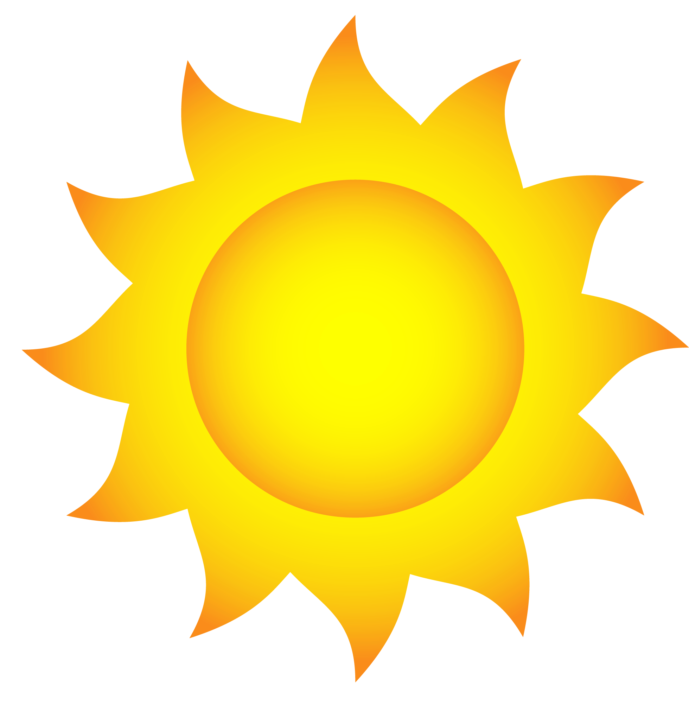

Jamaica
Date: 03/10/21 Author: Brandon Hall

This blog is about my country of birth Jamaica and what it means to be Jamican.
Affectionately called YAAD.Jamica has it's problems but will always be home to me.
It is know as the land of wood and water because of the numerous water attractions from rivers,beaches,
waterfalls and the lush forestry that covers the majority of the country.Mjority of the country's
activity takes places in a small area on the south coast known as Kingston home to 1.5 million Jamaicans.
Kingston acts as the capital of Jamaica since 1872.
Jamaica was the 2nd Caribbean island to gain independence right behind our close neighbours Haiti.
We officaly became an idependent nation on August 6th, 1962.The main figures who helped pave the way for Jamaica
to gain independence is imortalized in history as Jamaica's National Heores. Some of these heroes are
Marcus Garvey, Sam Sharp, Nanny of The Maroons and Paul Bogle.They each played a role in shaping this nation.
What does it mean to be Jamican
Date: 03/10/21 Author: Brandon Hall

Jamaica's long history of forced or voluntary migration has created a
unique mixture of culture and people.This history personifies the country's motto
'Out of Many One People'. It can be said that this rich culture has left the world in awe
where our muisc, dialect and style has sparead all over the globe with people wanting to
replicate what we have. Jamaicans when abroad carry this image of pride of the small country not changing
to their environment but expressing there selves and changing the new environment itself.
Which such influence and pride the saying "We Likkle But we Tallawah" can never be truer.
Some of Jamica's dishes which are world renowned at this point is Jerk Chicken, Ackeee and Saltfish,
PepperPot Soup and a alot more.When it comes to music Jamaican's have helped pioneered some of the most popular genres
in modern history such as Rap, Dancehall and most of all Reggae.The first thing that comes to a outsider's mind when they think of
Jamaica is the great Bob Marley,Jimmy Cliff ,Shaggy and many more.